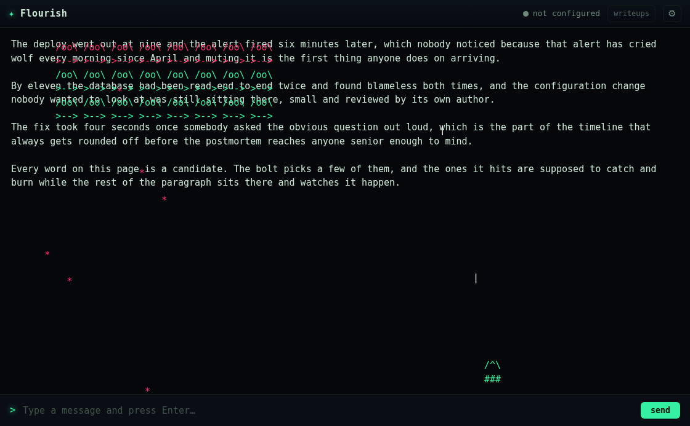
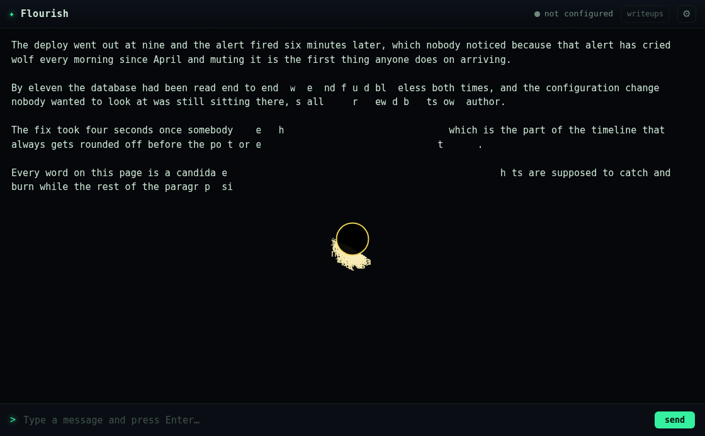
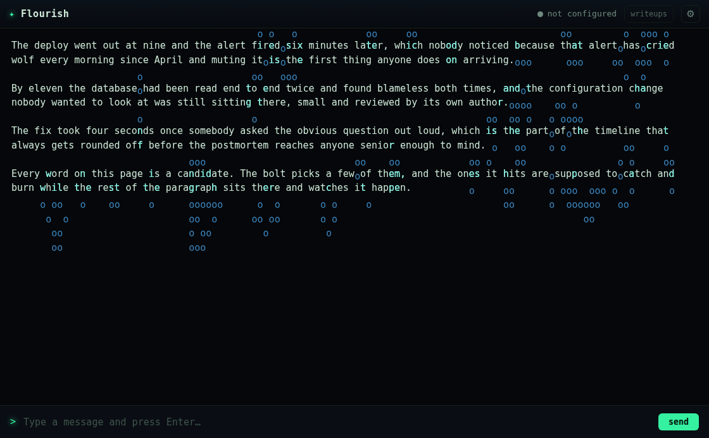
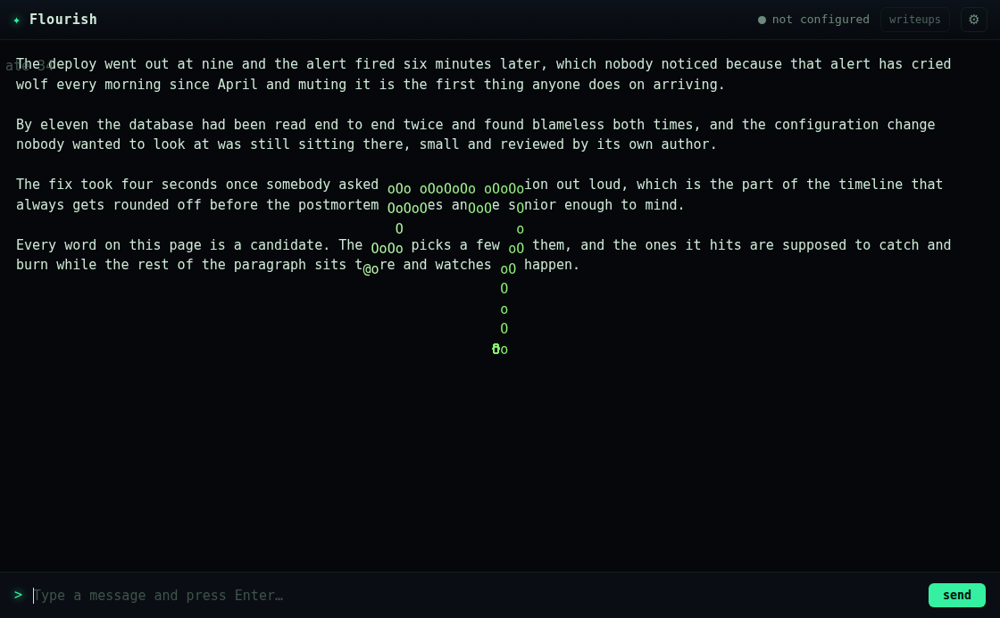
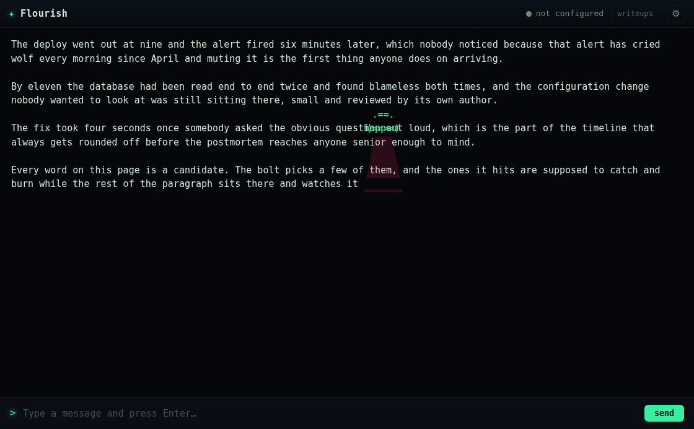
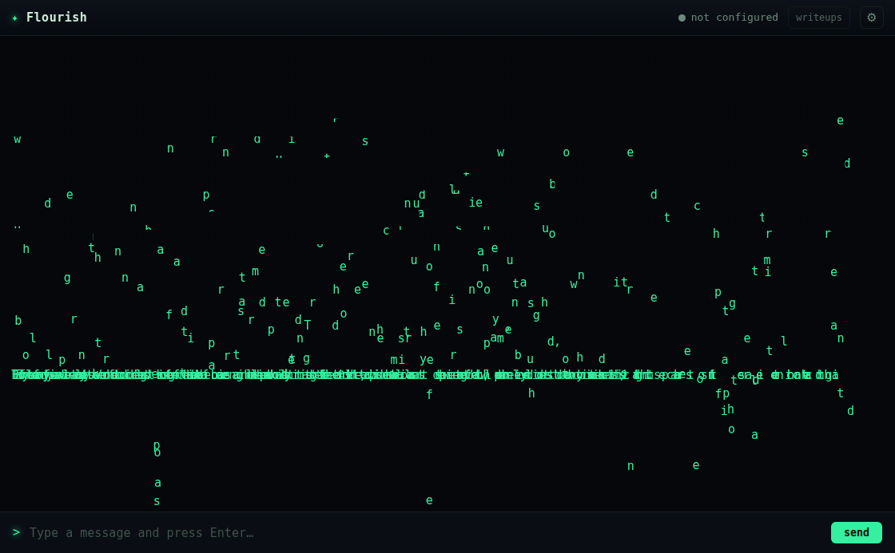
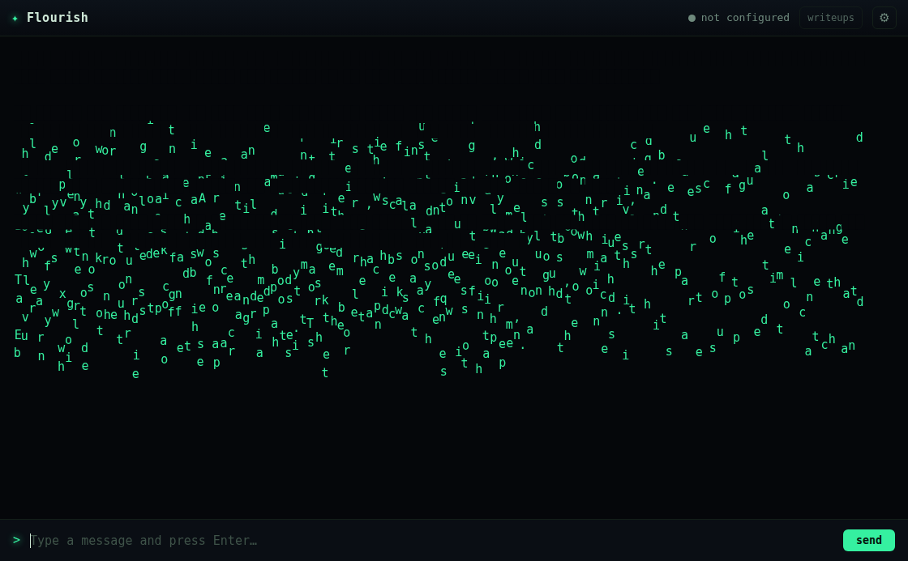
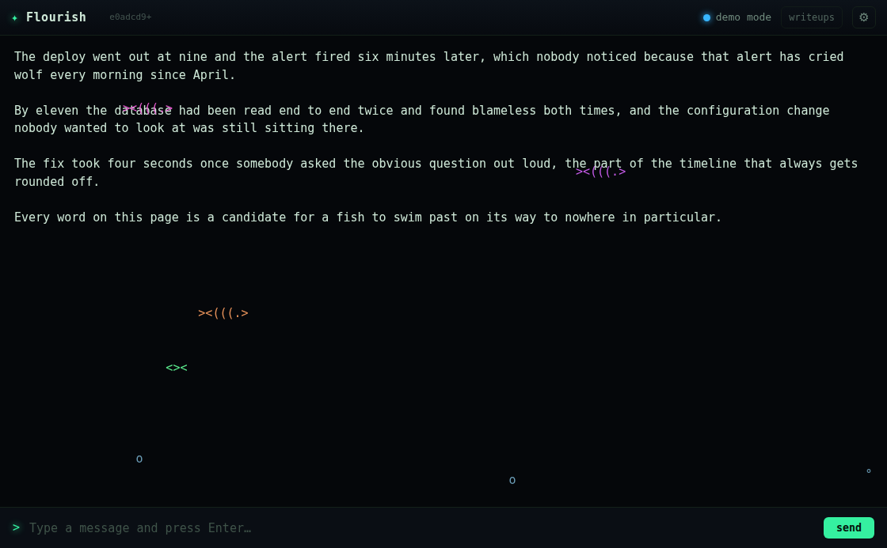

"i want to see 10 more ascii art effects like that. dont be afraid to be creative and cheeky."
"Like that" = the grid register: effects painted into the terminal's own character cells, built out of the prose already on screen, mutating nothing. Ten more, cheekier — mostly arcade and screensaver gags, each one doing something to your words.
| effect | the gag | what it does to the prose |
|---|---|---|
snake | the Nokia snake, slithering the grid | seeks the nearest character and eats it; the word goes dark and the snake grows |
invaders | a formation marches down; a cannon sweeps the bottom | invaders bomb your prose, shots blow invaders out of the sky |
pacman | waka-waka along a line, a ghost chasing | the characters ahead are pellets and vanish as they're eaten |
ufo | a saucer parks over a word and tractor-beams it | the word's characters rise off the line into the ship (and come back) |
blackhole | a singularity opens in the text | nearby characters spiral in and stretch toward the core, then fall back |
life | Conway's Game of Life | seeded from the ink of the screen — your own words breed, glider away and die |
melt | the screen turns to wax | every column of text sags and drips down, pools, then reforms |
quake | the ground shakes | characters rattle off their lines, fall into a heap at the bottom, spring home |
dvd | the screensaver dream | a word bounces around as a logo; hit a corner exactly and the crowd goes wild |
aquarium | the terminal floods | ascii fish swim the lines, bubbles rise, the prose is the reef |
Same architecture as volume I: each fact is a pure seeded planner in flourish.js
(node --test pins it), and the geometry, motion and incorporation live in
effects.js against a grid it can't see. Motion runs in _step<Name> from the
update loop so it gets real dt; nothing mutates the DOM, so every eaten pellet, abducted
word and melted line is a knockout drawn on canvas over untouched text — whole again the instant the
scene is reaped. The one genuine algorithm, Conway's step, is pure and exported, and the tests pin it
against a blinker and a block.

invaders — formation of /oo\ >--> marching, a /^\ ### cannon bottom-right, a shot |, bombs * falling on the prose.
blackhole — a bright accretion ring around a dark core; the words around it pulled apart and spiralling in.
life — Conway seeded from the text: the prose lit where alive, o colonies bred out into the margins.
snake — the body threading down through the paragraph, eating characters (the gaps) as it goes; score top-left.
ufo — a saucer over "question", tractor beam down, the word's letters lifting off the line.
quake at 900ms — characters mid-fall, a dense heap forming along the bottom.
melt — the whole screen sagging downward in wax, each column at its own pace.
aquarium — ><(((.> and <>< swimming the lines, bubbles rising, after the spawn fix.The order this repo insists on: plan pure, probe the paint, then look anyway. 218 unit tests (Conway
against textbook oscillators, every planner sane at seven seeds, the sprites rectangular);
ascii-probe extended with a faithfulness oracle per new scene — a snake head @,
a saucer, a ghost, fish — verdict 25/25 planned / painted / faithful / reaped
(full output); then every one read as a screenshot.
planInvaders returns
rows as a number, and the probe indexed S.plan.rows.map(...); the
life scene carried a numeric rows, and the reveal-timing oracle indexed
S.rows[0].length. Both threw "Script failed to execute" with no
hint which scene. A one-line process.stdout.write(name) localised it to life
in one run. Fixed by guarding every index with Array.isArray and renaming life's dims to
lcols/lrows so a number can never sit where an array is expected. A shared field name
across effects is a collision waiting for the next author.above: 0, below: 0 at every sample after.